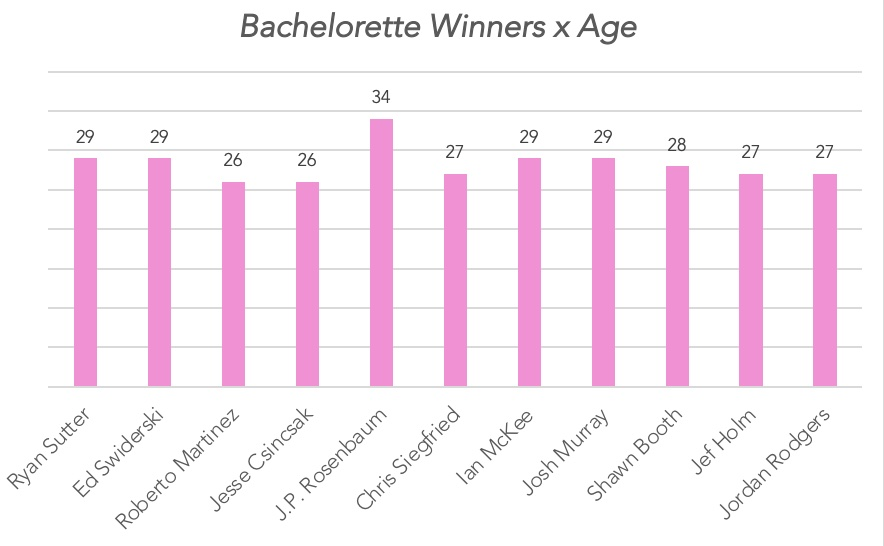

The Bachelor franchise can be considered as one of the biggest television goldmines in society today. As the popularity of the Bachelor/Bachelorette continues to rise, many viewers pose questions about the television program and what really determines the winner. Though using a dataset on Kaggle, I was able to determine that all but one of the bachelorette winners was in his late 20s. While this could be a coincidence, I believe there is truth to it. Reasons for this phenomenon could include the maturity of adult males, divorce risk, and the benefit of marrying in the late 20s.
Out of the eleven winners in the dataset, ten of them were aged in their late 20s, as seen in the graphic below.
One of the correlations for this occurrence could be the fact that the adult male brain does not fully mature until their mid-twenties. With this, it can be assumed that males in their early twenties may not be mature enough for marriage, and that maturity affects their ability to have a serious relationship like seen on the Bachelor. Dr. Sandra Aamodt, a neuroscientist and science writer, reported in a Man of the Hour magazine article that “men do not reach full maturity until age 25. At this age, brains fully develop and can make more mature, well-thought out life decisions” (Melnyk 2018). The research that Dr. Aamodt presented in that article offers a reasonable explanation for why younger candidates in the show did not make it to the final round, or make it to a proposal. To reach life decisions at a young age might not create the best outcome, hence why older contestants had more success in the Bachelor.
On the other hand, marrying too late could pose another issue. The divorce for older couples tying the knot only increases with age. As the goal of the Bachelor is to end in a proposal, and then a successful marriage, marrying too late could complicate that objective. Institute for Family Studies, an institute to strengthen marriage and family life, wrote about divorce risk in one of their articles. They reported, “Individuals who marry when they are older than 34 tend to face a slightly higher risk of divorce in their first five years of marriage. Moreover, the divorce risk is clearly higher for individuals when they marry at age 40 or later.” (An Optimal Age to Marry?). The reason people apply to be contestants on the bachelor/bachelorette to start a happy marriage and the risk of divorce could scare them away from even trying. Knowing that divorce only increases with age could explain as to why there are not many older contestants, let alone any older contestants that make it to the Final Rose.
Furthermore, there are certain benefits of marrying at the primal age of the late-twenties. Because the average age of the winners was 28 (My Work 2), they experienced particular similarities between themselves and the bachelorette. W. Bradford Wilcox, an American sociologist wrote in a Washington Post article that “those who marry in their twenties, for instance, are more likely to marry someone who isn’t previously married and shares their level of educational attainment as well as their religious faith” (Wilcox 2019). Commonalities between a relationship is what makes it last, and to be in that age range produces a spark and a trust. The winners on the bachelorette experienced this, hence resulting in a proposal at the end of their season.
The Bachelor/Bachelorette continues to proceed in its popularity. Many wonder if there is one special formula to determine a winner. Maturity age, divorce risk, and advantages of their age, I believe, are part of that formula that influenced the winners on the Bachelorette. Although these contestants may have not been aware of the factors that correlated their success in the show and their age, it is a subliminal effect that led them to a proposal and soon marriage.